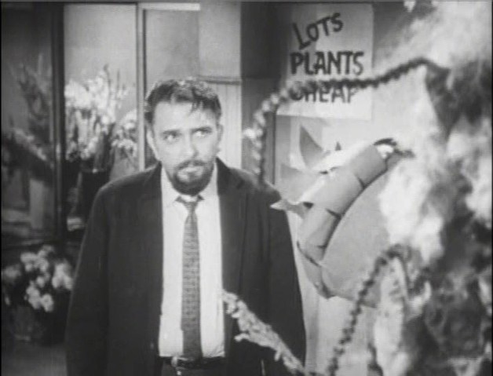

The Little Shop of Horrors, frame at 54:16
Roger Corman · 1960 · Film, black and white (frame)
Free to use
Roger Corman made the film on sets left standing from his A Bucket of Blood before they were torn down: three days of rehearsals, then two days and one night of shooting in the last week of December 1959, ahead of new rules on actors' residuals. Exteriors were shot over two weekends with $279 of rented equipment. Distributors held back, and the film came out nine months after it was finished.